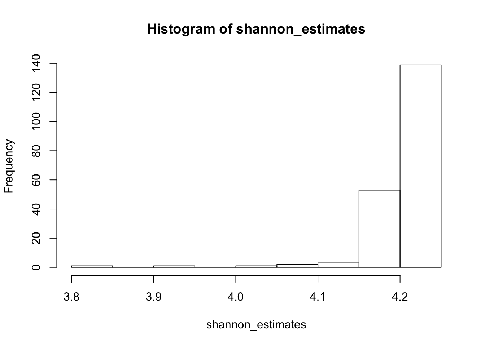
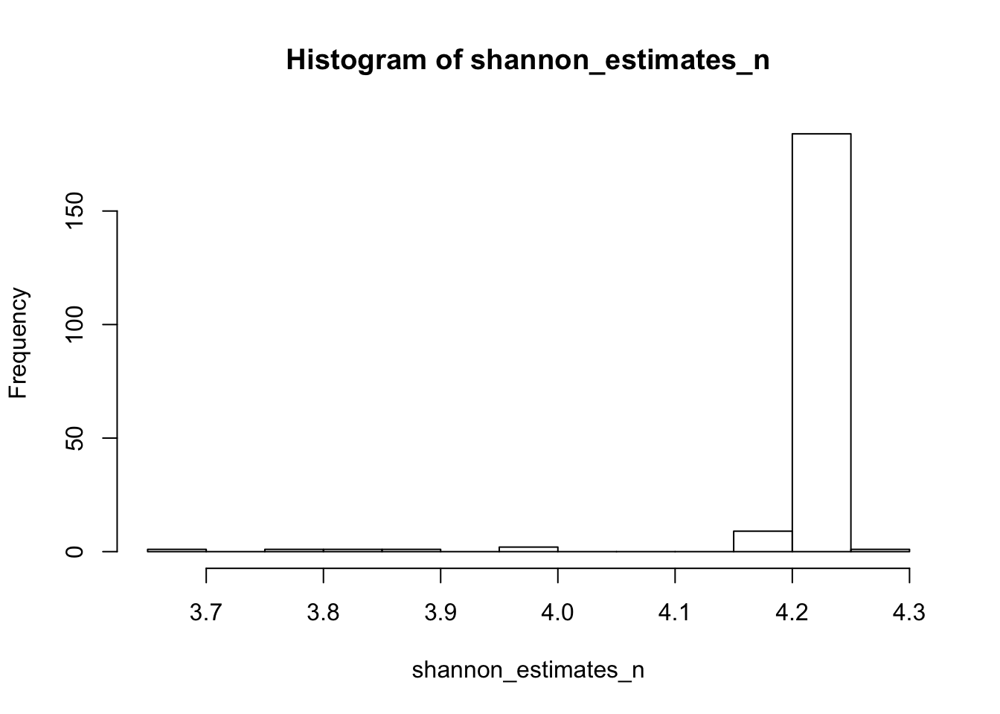

Variance of alpha diversity estimates
Amy Willis
2018-05-16
resample-estimates.RmdAlpha diversity metrics, such as Shannon and Simpson indices, are unknown parameters of the microbial communities that we study. Like any other parameter of a population, they need to be estimated based on data, and the estimates should be accompanied by standard errors. Unfortunately this is not practised in the case of alpha diversity indices in microbial ecology.
This tutorial will run you through some methods for estimating standard errors on alpha diversity estimates. This is an active area of research of the Statistical Diversity Lab (Amy’s research group) at UW, and so this tutorial will evolve as better models are developed.
Currently alpha diversity is estimated using plug-in estimates. This involves assuming that you sampled the entire microbial community, not just a small sample of it. Plug-in estimates involve imputing the relative abundances that you observed in your sample in calculating the estimate based on these relative abundances. But how do we get a reasonable estimate of the variance in this estimate? A reasonable first pass at this is to use the independent bootstrap. This will definitely underestimate the actual variance in alpha diversity estimates, but it’s a reasonable first pass. Let’s see what it looks like:
### Run the first two lines at home! ####
# install.packages("devtools")
# devtools::install_github("adw96/breakaway")
library(breakaway)
data(toy_otu_table)
data(toy_metadata)
shannon(toy_otu_table[,1])## [1] 4.220773resample_estimate(toy_otu_table[,1], shannon)## [1] 4.170993The function resample_estimate takes on a column of your OTU table, bootstraps the OTUs that were observed, and calculates the plug-in estimate of the alpha diversity function on that bootstrapped sample.
Great! How do we use that to get an estimate of the variance of the plug-in Shannon estimate? We do it lots of times!
shannon_estimates <- replicate(200, resample_estimate(toy_otu_table[,1], shannon))
hist(shannon_estimates)
Okay, that doesn’t look so bad. Perhaps we don’t have that much variance in estimating Shannon after all?
WRONG! We have so much variance in estimating this. Plug-in estimates are very sensitive to sample size – hence why the practice of rarefying arose. A natural proposal is then to bootstrap over multiple different sample sizes. What should those multiple different sample sizes be? Let’s try the number of reads that we found across all of our samples.
First calculate the number of reads that we obtained in each sample
ns <- apply(toy_otu_table, 2, sum)
hist(ns)
Then let’s iterate over them in calculating our estimates.
shannon_estimates_n <- replicate(200, resample_estimate(toy_otu_table[,1], shannon, my_sample_size = ns))
hist(shannon_estimates_n)
That’s a lot more variability than we initially saw! How about the standard deviation?
sd(shannon_estimates_n)## [1] 0.07808451sd(shannon_estimates)## [1] 0.06807522Okay that’s not that different. But since current practices pretending that the standard deviation is zero (no error bars on alpha diversity!), it’s way better than pretending that the variance is zero.
Similarly, this isn’t a great solution to constructing confidence intervals for Shannon, but it’s a start!
quantile(shannon_estimates_n, c(0.025, 0.975))## 2.5% 97.5%
## 4.059053 4.228583Watch this space for better ways to construct confidence intervals for alpha diversity!
(Obviously this tutorial applies to any other diversity index, not just Shannon, but hopefully was helpful to make this discussion more concrete.)
By the way – it’s much better, in my opinion, to use non-bootstrapped standard errors for species richness estimates. This is because there are certain regularity conditions that are necessary for the bootstrap to give reasonable estimates of variance, and these definitely don’t hold for species richness estimation.
(It’s likely that they don’t hold for other alpha diversity indices either, but it’s definitely a terrible idea for richness!)